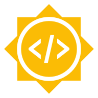
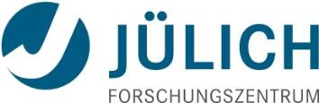

Acknowledgments¶
We are very grateful for your continuing support for LiberTEM!
Please help us keeping these lists up-to-date and complete! If you feel that you should be listed here, please contact us. We are grateful for every contribution, and if your contribution is not listed here we’d like to extend our apologies and update this as soon as possible.
Creators¶
The following people in alphabetical order contributed to source code, documentation, design and management following our Authorship policy.
- Anand Baburajan (Government Engineering College Sreekrishnapuram) ORCID GitHub
Reshaping and offset for datasets, various GUI fixes
- Abijith Bahuleyan (Government Engineering College Sreekrishnapuram) ORCID GitHub
Notebook download for analyses, bug fixes, documentation
Matthew Bryan (CEA-Leti) ORCID GitHub
- Jan Caron (Jülich Research Centre, Ernst Ruska Centre) ORCID GitHub
Discussions, advanced color wheel for vector field visualization
- Rahul Chandra (Chandigarh University) ORCID GitHub
Test and update of examples
- Alexander Clausen (Jülich Research Centre, Ernst Ruska Centre) ORCID GitHub
System design, engineering, implementation, documentation, management, majority of the code
- Shankhadeep Dey (Siliguri Institute of Technology) GitHub
Added types to libertem.api.Context #643
- Rafal E. Dunin-Borkowski (Jülich Research Centre, Ernst Ruska Centre) ORCID
Scientific advisory, resources, discussion, publications
- Sayandip Halder (Jadavpur University) ORCID GitHub
Modifying the documentation to make it more user-friendly
- Daniel S. Katz (University of Illinois at Urbana-Champaign) ORCID GitHub
Fixes in BibTeX for JOSS paper
- Barnaby D.A. Levin (Direct Electron) ORCID GitHub
Discussions, ensuring compatibility with data from Direct Electron cameras
- Vadim Migunov (RWTH Aachen University, Jülich Research Centre, Ernst Ruska Centre) ORCID GitHub
Scientific advisory, discussion, sample data, binning prototype, holography features
- Knut Müller-Caspary (Jülich Research Centre, Ernst Ruska Centre) ORCID
Scientific advisory, discussion, sample data regarding strain mapping, sample code for MIB reader
- Magnus Nord (University of Antwerp) ORCID GitHub
Discussions, tests, code in related projects
- Colin Ophus (Lawrence Berkeley National Laboratory) ORCID GitHub
Discussions, sample code for K2 reader, overview of related projects, reference files
- Simon Peter GitHub
Help with setting up AppImage building and Continuous Integration
- Karina Ruzaeva (Jülich Research Centre, Ernst Ruska Centre) ORCID GitHub
Fast diffraction analysis
- Jay van Schyndel (Monash University eResearch Centre) GitHub
Fix issue 80 to allow container deployment
- Jaeweon Shin (ETH Zürich) GitHub
Single pass numerically stable standard deviation
- Sai Sunku (Columbia University) GitHub
Bug fixes
- Dieter Weber (Jülich Research Centre, Ernst Ruska Centre) ORCID GitHub
Management, requirements analysis, system design, testing, documentation, communication
Contributions¶
The following people in alphabetical order contributed to the LiberTEM project in other ways.
- @theassassin GitHub
Help with setting up AppImage building and Continuous Integration
- Juri Barthel (FZ Jülich)
Discussions, compatibility with Dr. Probe
- Reimar Bauer (FZ Jülich)
Help with Google Summer of Code 2019 and 2020
- Julian Becker (X-Spectrum)
Discussions, system design, funding applications
- Andreas Beckmann (X-Spectrum)
Discussions, system design, funding applications
- Robert Bücker (MPSD)
Discussions, sample files
- Phillip Crout (pyXem)
Discussions, work towards mutual compatibility.
- Simeon Ehrig (HZDR) GitHub
Discussions, ptychography integration concepts, GPU integration concepts
- Alberto Eljarrat Ascunce (HU Berlin) GitHub
Nion Swift hackathon, feedback and discussions
- Peter Ercius (Berkeley Lab)
Re-licensing ncempy under MIT license to allow using it in the IO part of LiberTEM, enabling full K2IS raw file, DM3/DM4, and SER support.
- Andrey Fedorov (Brigham and Women’s Hospital) ORCID GitHub
Review JOSS paper, help with installation instructions on zsh
- Caroline Fuery (Microscopy Australia)
Discussions, supporting deployment on Australian eResearch infrastructure
- Patrick Furhmann (DESY)
Discussions, system architecture
- John Gaida (Göttingen University) GitHub
Help with Norpix SEQ support #153 #767
- Wojtek James Goscinski (Monash)
Discussions, supporting deployment on Australian eResearch infrastructure
- Giulio Guzzinati (U Antwerp)
Discussions and publication https://arxiv.org/abs/1902.06979 leading to the affine transformation strain map
- Benedikt Haas (HU Berlin) GitHub
Nion Swift hackathon, discussions, bug reports
- Chris Hines (Monash)
Discussions, supporting deployment on Australian eResearch infrastructure
- Lothar Houben (Weizmann)
Discussions
- Martin Huth (PNDetector)
Discussions, sample files, documentation for implementing FRMS6 support
- Pete Jemian (NeXus project)
Discussions and support regarding NeXus file format
- Mark Jensen (Frederick National Laboratory for Cancer Research) ORCID GitHub
Finishing touches review JOSS paper
- Duncan N. Johnstone (pyXem)
Discussions, work towards mutual compatibility.
- Christoph Koch (HU Berlin)
Discussions
- Matus Krajnak (Quantum Detectors)
Bug report and fix regarding MIB format
- Alexander Krings (FZ Jülich)
Discussions, requirements description
- Siu Kwan Lam (Anaconda Inc.) GitHub
Help work around issue with Numba in GMS
- Weng I Lei (Gatan)
Discussions, Python support in GMS
- Anastasiia Lesnichaia (FZ Jülich)
Prototyping for scalable implementation of Single Side Band ptychography, WIP
- Penghan Lu (FZ Jülich)
Scientific advisory, discussion, sample data
- Ian MacLaren (U Glasgow)
Sample data for peak selector example, discussions, advisory
- Christoph Mahr (U Bremen)
Discussions leading to the full frame refinement code
- Shane McCartan (U Glasgow)
Sample data for peak selector example
- Heide Meissner (HZDR)
Discussions, funding applications
- Andreas Mittelberger (Nion) GitHub
Nion Swift integration; feedback and discussions
- Grigore Moldovan (Point Electronic)
Discussions
- Johannes Müller (HU Berlin)
Nion Swift Hackathon, Discussions
- Eduardo Nebot (Quantum Detectors)
Support, discussions, sample files, funding applications
- Liam O’Ryan (Quantum Detectors)
Support, discussions, sample files, funding applications
- Terri Oda (Python Software Foundation) GitHub
Managing GSoC 2019 and 2020 under the umbrella of the Python Software Foundation
- Ana Pakzad (Gatan)
Discussions, support for implementing K2 raw file format
- Thomas C. Pekin (HU Berlin) GitHub
Nion Swift hackathon, feedback and discussions
- Francisco de la Peña (Lille)
Discussions
- Tobias Richter (NeXus project)
Discussions and support regarding NeXus file format
- Robert Ritz (PNDetector)
Discussions, sample files, documentation for implementing FRMS6 support
- Kunt Sander (DESY)
Discussions, system architecture
- Marcel Schloz (HU Berlin)
Nion Swift hackathon, feedback and discussions
- Michael Schuh (DESY)
Discussions, system architecture
- Sherjeel Shabih (HU Berlin) GitHub
Nion Swift hackathon, feedback and discussions
- Martin Simson (PNDetector)
Discussions, sample files, documentation for implementing FRMS6 support
- Andy Stewart (U Limerick)
Discussions
- Murali Sukumaran (HZM)
Discussions, funding applications
- Eugene Sweeney (Iambic Innovation)
Discussions, proposal review
- Jo Verbeeck (U Antwerp)
Open data https://zenodo.org/record/2566137
- Paul Voyles (U Wisconsin)
Discussions
- Benjamin Watts (PSI)
Help and sample files towards a NeXus Application Definition for pixelated STEM.
- Roger Wepf (U Queensland)
Discussions, supporting deployment on Australian eResearch infrastructure
- Jacob Wilbrink (Gatan)
Discussions, support for implementing K2 raw file format
- Lance Wilson (Monash)
Discussions, supporting deployment on Australian eResearch infrastructure
- Florian Winkler (FZ Jülich)
Discussions, requirements description
- Markus Wollgarten (HZB)
Discussions, funding applications
- Wolfgang zu Castell (HZM)
Discussions, funding applications
Notable upstream projects¶
Python, PyData universe, Dask.distributed, PyTorch, NumPy, OpenBLAS, Click, Tornado web, Matplotlib, Pillow, H5Py, Numba, Psutil, Ncempy
TypeScript, React, React Window, Redux, Redux-saga, Semantic UI
Not dependencies, but notable related projects or useful tools: Hyperspy, NeXus, Apache Spark, Hadoop file system, Godbolt compiler explorer, FIO, pyXem, Nion Swift, Alpaka
Code licensing¶
Parts of the SEQ reader are based on the PIMS project, which has the following license:
Copyright (c) 2013-2014 PIMS contributors
https://github.com/soft-matter/pims
All rights reserved
Redistribution and use in source and binary forms, with or without
modification, are permitted provided that the following conditions are met:
* Redistributions of source code must retain the above copyright
notice, this list of conditions and the following disclaimer.
* Redistributions in binary form must reproduce the above copyright
notice, this list of conditions and the following disclaimer in the
documentation and/or other materials provided with the distribution.
* Neither the name of the soft-matter organization nor the
names of its contributors may be used to endorse or promote products
derived from this software without specific prior written permission.
THIS SOFTWARE IS PROVIDED BY THE COPYRIGHT HOLDERS AND CONTRIBUTORS "AS IS" AND
ANY EXPRESS OR IMPLIED WARRANTIES, INCLUDING, BUT NOT LIMITED TO, THE IMPLIED
WARRANTIES OF MERCHANTABILITY AND FITNESS FOR A PARTICULAR PURPOSE ARE
DISCLAIMED. IN NO EVENT SHALL <COPYRIGHT HOLDER> BE LIABLE FOR ANY
DIRECT, INDIRECT, INCIDENTAL, SPECIAL, EXEMPLARY, OR CONSEQUENTIAL DAMAGES
(INCLUDING, BUT NOT LIMITED TO, PROCUREMENT OF SUBSTITUTE GOODS OR SERVICES;
LOSS OF USE, DATA, OR PROFITS; OR BUSINESS INTERRUPTION) HOWEVER CAUSED AND
ON ANY THEORY OF LIABILITY, WHETHER IN CONTRACT, STRICT LIABILITY, OR TORT
(INCLUDING NEGLIGENCE OR OTHERWISE) ARISING IN ANY WAY OUT OF THE USE OF THIS
SOFTWARE, EVEN IF ADVISED OF THE POSSIBILITY OF SUCH DAMAGE.
Confirm message on exit using ctrl+c is implemented by referencing jupyter notebook project, which has the following license:
- Copyright (c) 2001-2015, IPython Development Team
- Copyright (c) 2015-, Jupyter Development Team
All rights reserved.
Redistribution and use in source and binary forms, with or without
modification, are permitted provided that the following conditions are met:
Redistributions of source code must retain the above copyright notice, this
list of conditions and the following disclaimer.
Redistributions in binary form must reproduce the above copyright notice, this
list of conditions and the following disclaimer in the documentation and/or
other materials provided with the distribution.
Neither the name of the Jupyter Development Team nor the names of its
contributors may be used to endorse or promote products derived from this
software without specific prior written permission.
THIS SOFTWARE IS PROVIDED BY THE COPYRIGHT HOLDERS AND CONTRIBUTORS "AS IS" AND
ANY EXPRESS OR IMPLIED WARRANTIES, INCLUDING, BUT NOT LIMITED TO, THE IMPLIED
WARRANTIES OF MERCHANTABILITY AND FITNESS FOR A PARTICULAR PURPOSE ARE
DISCLAIMED. IN NO EVENT SHALL THE COPYRIGHT OWNER OR CONTRIBUTORS BE LIABLE
FOR ANY DIRECT, INDIRECT, INCIDENTAL, SPECIAL, EXEMPLARY, OR CONSEQUENTIAL
DAMAGES (INCLUDING, BUT NOT LIMITED TO, PROCUREMENT OF SUBSTITUTE GOODS OR
SERVICES; LOSS OF USE, DATA, OR PROFITS; OR BUSINESS INTERRUPTION) HOWEVER
CAUSED AND ON ANY THEORY OF LIABILITY, WHETHER IN CONTRACT, STRICT LIABILITY,
OR TORT (INCLUDING NEGLIGENCE OR OTHERWISE) ARISING IN ANY WAY OUT OF THE USE
OF THIS SOFTWARE, EVEN IF ADVISED OF THE POSSIBILITY OF SUCH DAMAGE.
Funding¶
LiberTEM kindly acknowledges funding and support from the following sources:
ERC Proof-of-Concept grant VIDEO¶
This project has received funding from the European Research Council (ERC) under the European Union’s Horizon 2020 research and innovation programme (grant agreement No 780487).
CritCat¶
{kind=link}
This project has received funding from the European Union’s Horizon 2020 research and innovation programme under grant agreement No 686053.
ESTEEM3¶
This project has received funding from the European Union’s Horizon 2020 research and innovation programme under grant agreement No 823717 – ESTEEM3.
ERC Synergy grant 3D MAGiC¶
moreSTEM¶

We gratefully acknowledge funding from the Initiative and Networking Fund of the Helmholtz Association within the Helmholtz Young Investigator Group moreSTEM under Contract No. VH-NG-1317 at Forschungszentrum Jülich in Germany.
Ptychography 4.0¶
{kind=link}
We gratefully acknowledge funding from the Information & Data Science Pilot Project “Ptychography 4.0” of the Helmholtz Association.
Google Summer of Code¶
{kind=link}

We kindly acknowledge funding from Google Summer of Code 2019 and 2020 under the umbrella of the Python software foundation.
Gatan Inc.¶
{kind=link}
STEMx equipment and software for 4D STEM data acquisition with K2 IS camera courtesy of Gatan Inc.
Forschungszentrum Jülich, Ernst-Ruska Centrum¶

Forschungszentrum Jülich is supporting LiberTEM with funding for personnel, access to its infrastructure and administrative support.